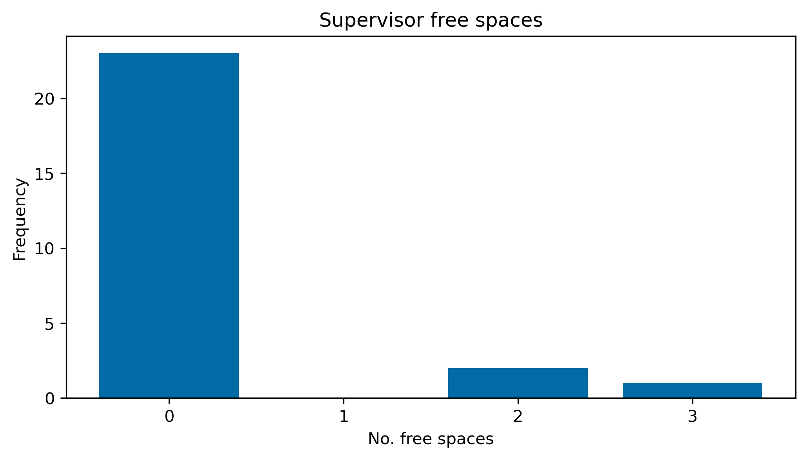
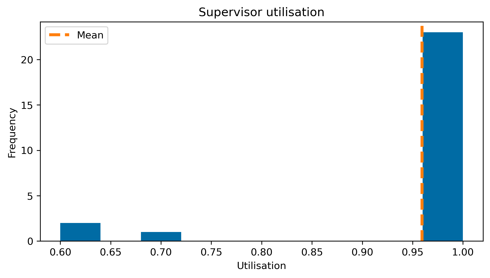
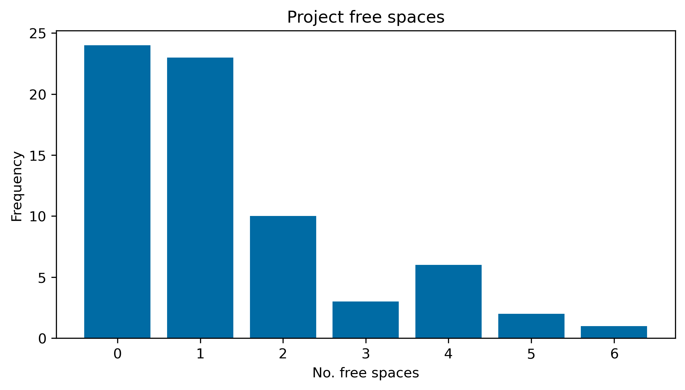
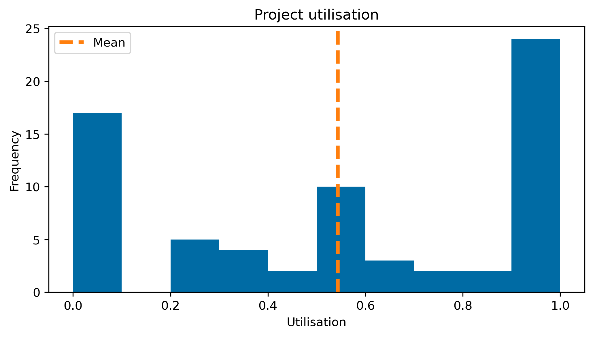
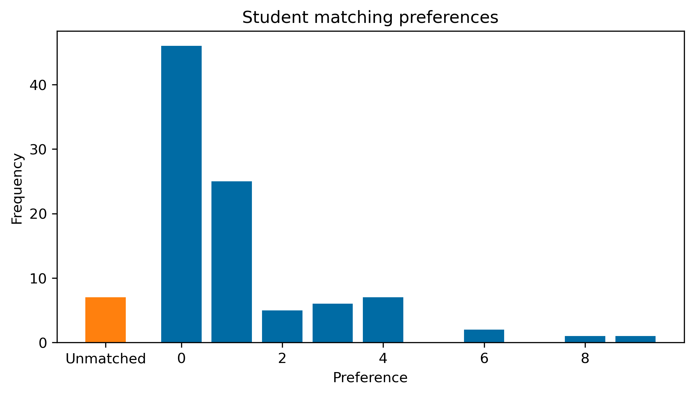
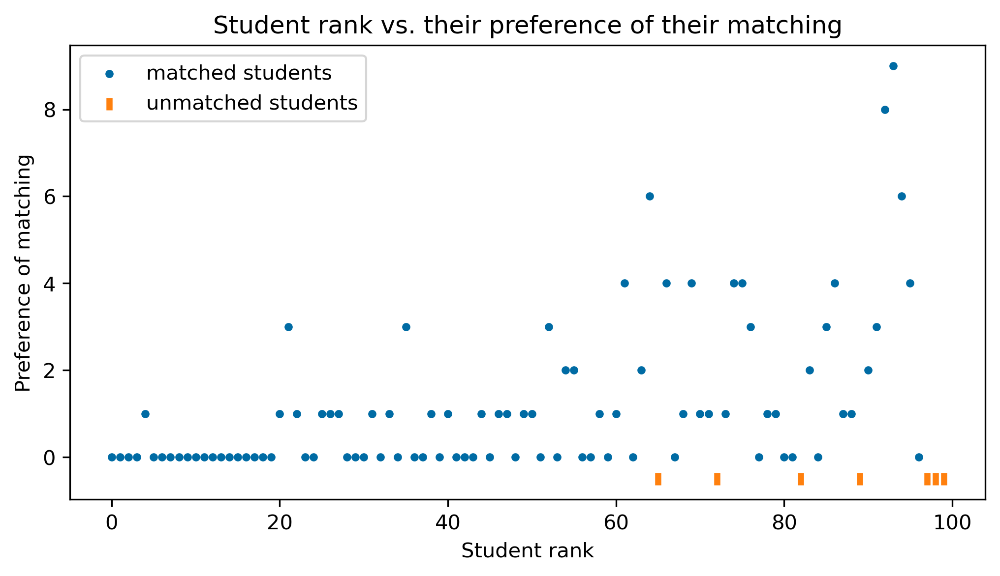

import numpy as np
import pandas as pd
pd.set_option("display.max_columns", None)Producing a final-year project allocation
Assign a cohort of students their dissertations according to their grade
In this tutorial we will be solving an instance of SA using raw, tabular data.
This tutorial covers all aspects of the project allocation process, from wrangling the data, all the way through to analysing the results. In fact, this tutorial has been used to train staff at Cardiff University in performing automatic project allocation.
The data for this tutorial have been archived on Zenodo, and the source code used to generate them is here.
raw_students = pd.read_csv("https://zenodo.org/record/3514287/files/students.csv")
raw_projects = pd.read_csv("https://zenodo.org/record/3514287/files/projects.csv")
raw_supervisors = pd.read_csv("https://zenodo.org/record/3514287/files/supervisors.csv")Cleaning the data
In order to use Matching’s implementation of SA, we require the data to be “clean”. This process will require us to inspect the data and remove any erroneous rows from each of our datasets.
Students
We begin with the students. The first thing we have to do is find out how many choices students were allowed to make:
raw_students.columnsIndex(['name', 'rank', '0', '1', '2', '3', '4', '5', '6', '7', '8', '9', '10',
'11', '12', '13', '14', '15', '16', '17', '18', '19', '20', '21', '22',
'23', '24'],
dtype='object')We can see that students could make up to 25 selections, and the choice columns are numbered 0 through 24.
n_choices = 25
choices = map(str, range(n_choices))Now we want to get rid of any students that didn’t make any choices.
students = raw_students.copy().dropna(subset=choices, how="all").reset_index(drop=True)
students.head()| name | rank | 0 | 1 | 2 | 3 | 4 | 5 | 6 | 7 | 8 | 9 | 10 | 11 | 12 | 13 | 14 | 15 | 16 | 17 | 18 | 19 | 20 | 21 | 22 | 23 | 24 | |
|---|---|---|---|---|---|---|---|---|---|---|---|---|---|---|---|---|---|---|---|---|---|---|---|---|---|---|---|
| 0 | 190000 | 3 | G2 | P1 | V2 | S0 | A0 | O0 | L0 | D2 | K1 | V1 | R2 | G2 | Y2 | G2 | W0 | K0 | X0 | O1 | NaN | NaN | NaN | NaN | NaN | NaN | NaN |
| 1 | 190001 | 56 | Q0 | P1 | P0 | M1 | N0 | P1 | T2 | N1 | I1 | K0 | P3 | X1 | F0 | P1 | S0 | C0 | Z0 | L0 | H2 | NaN | NaN | NaN | NaN | NaN | NaN |
| 2 | 190002 | 60 | D0 | U0 | Y1 | E2 | R0 | P0 | V1 | R2 | X1 | Y0 | R1 | I1 | T1 | V1 | Y2 | A1 | I2 | N1 | A0 | J2 | A0 | NaN | NaN | NaN | NaN |
| 3 | 190003 | 67 | C0 | J1 | I2 | N1 | W1 | E1 | M1 | Z1 | Q0 | B1 | O0 | NaN | NaN | NaN | NaN | NaN | NaN | NaN | NaN | NaN | NaN | NaN | NaN | NaN | NaN |
| 4 | 190004 | 19 | I0 | M1 | C2 | D0 | W0 | F1 | B2 | O1 | T0 | L0 | W1 | X2 | W0 | N0 | NaN | NaN | NaN | NaN | NaN | NaN | NaN | NaN | NaN | NaN | NaN |
We can see that, in fact, some students won’t be included in this game:
len(raw_students) - len(students)3Projects
Now that students are done, we can move onto the projects.
Each project needs a code, a supervisor and a non-zero capacity. We drop any project that is missing any of these items.
projects = raw_projects.copy()
projects = projects.dropna()
projects = projects[projects["capacity"] > 0]
projects.head()| code | capacity | supervisor | |
|---|---|---|---|
| 0 | A0 | 2 | A |
| 1 | A1 | 3 | A |
| 2 | A2 | 2 | A |
| 3 | B0 | 2 | B |
| 4 | B1 | 2 | B |
Verify that no projects were lost:
len(raw_projects) == len(projects)TrueSupervisors
Each supervisor requires a unique name and a non-zero capacity. We drop any supervisor without either of these things.
supervisors = raw_supervisors.copy()
supervisors = supervisors.dropna()
supervisors = supervisors[supervisors["capacity"] > 0]
supervisors.head()| name | capacity | |
|---|---|---|
| 0 | A | 3 |
| 1 | B | 1 |
| 2 | C | 8 |
| 3 | D | 5 |
| 4 | E | 2 |
Verify no supervisors were lost:
len(supervisors) == len(raw_supervisors)TrueCreating the dictionaries
With the now clean data, Python dictionaries must be created that we can pass to Matching. These dictionaries detail the following relationships:
- Project supervisor affiliations
- Project capacities
- Supervisor capacities
- Student preference lists
- Supervisor preference lists
Capacities and affiliations
We’ll begin with the capacity and affiliation dictionaries for projects. With both dictionaries, a project is only added if both their capacity and the capacity of their supervisor is non-zero.
supervisor_names = supervisors["name"].values
project_codes = projects["code"].valuesproject_to_capacity, project_to_supervisor = {}, {}
for _, (project, capacity, supervisor) in projects.iterrows():
if project in project_codes and supervisor in supervisor_names:
project_to_supervisor[project] = supervisor
project_to_capacity[project] = capacityNow we can create the supervisor capacity dictionary. In this case, we only include a supervisor if they have at least one valid project.
supervisor_to_capacity = {}
for _, (supervisor, capacity) in supervisors.iterrows():
if supervisor in project_to_supervisor.values():
supervisor_to_capacity[supervisor] = capacityPreference lists (dictionaries)
The only remaining dictionaries are for the preference lists of the students and the supervisors.
Let’s begin with the students.
As is discussed here, students must have a strict, unique preference of some non-empty subset of the projects. This means that if a student ranks no projects, they are excluded from the game.
.. note:: In the case where a student ranks the same project more than once, we take their highest ranking of it and shift everything else up.
student_to_preferences = {}
for _, (student, _, *prefs) in students.iterrows():
student_preferences = []
for project in prefs:
if project in project_codes and project not in student_preferences:
student_preferences.append(project)
if student_preferences:
student_to_preferences[student] = student_preferencesWith that done, we’re only left with the supervisors’ preferences.
As is often the case in real-world instances of SA, each student is assigned a unique rank in their cohort. This ranking is typically done independently of the supervisors to make the game as fair as possible. In cases where “backroom” deals are allowed between supervisors and students, the overall effect is that everyone is worse off.
sorted_students = students.sort_values("rank", ascending=True)["name"].valuesThis complete ranking of the students allows the supervisors to draw their preference list from the same source.
As is discussed here, each supervisor must rank all (and only) those students who have ranked at least one of their projects.
Note
If a student has ranked multiple projects from the same supervisor, they still only appear once in the supervisor’s preference list. As with students, if a supervisor’s preference list is empty (i.e. none of their projects were ranked by any student) then they are excluded from the game.
supervisor_to_preferences = {}
for supervisor in supervisor_names:
supervisor_preferences = []
supervisor_projects = [p for p, s in project_to_supervisor.items() if s == supervisor]
for student in sorted_students:
student_preferences = student_to_preferences[student]
if set(student_preferences).intersection(supervisor_projects):
supervisor_preferences.append(student)
if supervisor_preferences:
supervisor_to_preferences[supervisor] = supervisor_preferencesFinal clean up
We’re almost there but now we need to adjust the entries in our dictionaries that don’t make sense anymore.
Removing extra players from the game
To begin, we have to go back through supervisor_to_capacity to remove any unranked supervisors. Likewise for unranked projects but we must also remove them from project_to_supervisor.
It should follow that if a supervisor is unranked then none of their projects are either.
unranked_supervisors = set(supervisor_names).difference(supervisor_to_preferences.keys())
unranked_projects = set(project_codes).difference(
(project for prefs in student_to_preferences.values() for project in prefs)
)
unranked_supervisors, unranked_projects(set(), {'L1'})for supervisor in unranked_supervisors:
del supervisor_to_capacity[supervisor]
for project in unranked_projects:
del project_to_capacity[project]
del project_to_supervisor[project]Checking and adjusting capacities
The final step is to adjust the capacities. There are some stipulations on the capacities of projects and their supervisors:
Each project’s capacity must be no larger than that of its supervisor.
Each supervisor’s capacity must be:
- At least as large as its largest project’s capacity.
- No larger than the sum of its projects’ capacities.
We begin by reducing the capacities of too-large projects. This means that no supervisor will have to increase their capacity for the sake of a single project, and we don’t need to worry about the first point in (2).
for project, project_capacity in project_to_capacity.items():
supervisor = project_to_supervisor[project]
supervisor_capacity = supervisor_to_capacity[supervisor]
if project_capacity > supervisor_capacity:
print(
f"{project} has a capacity of {project_capacity} but",
f"{supervisor} has capacity {supervisor_capacity}.",
)
project_to_capacity[project] = supervisor_capacityB0 has a capacity of 2 but B has capacity 1.
B1 has a capacity of 2 but B has capacity 1.
B2 has a capacity of 2 but B has capacity 1.
E1 has a capacity of 3 but E has capacity 2.
E2 has a capacity of 3 but E has capacity 2.
F1 has a capacity of 3 but F has capacity 2.
I1 has a capacity of 2 but I has capacity 1.
I2 has a capacity of 2 but I has capacity 1.
M0 has a capacity of 8 but M has capacity 7.
O1 has a capacity of 2 but O has capacity 1.
Q0 has a capacity of 2 but Q has capacity 1.
R0 has a capacity of 2 but R has capacity 1.
R2 has a capacity of 2 but R has capacity 1.
S1 has a capacity of 7 but S has capacity 6.
T2 has a capacity of 2 but T has capacity 1.
U0 has a capacity of 6 but U has capacity 5.
V1 has a capacity of 3 but V has capacity 2.
V2 has a capacity of 3 but V has capacity 2.
X0 has a capacity of 8 but X has capacity 7.Now we can make sure that no supervisor is providing more spaces than they’re offering through their projects.
for supervisor, supervisor_capacity in supervisor_to_capacity.items():
supervisor_projects = [p for p, s in project_to_supervisor.items() if s == supervisor]
supervisor_project_capacities = [
project_to_capacity[project] for project in supervisor_projects
]
if supervisor_capacity > sum(supervisor_project_capacities):
print(
f"{supervisor} has capacity {supervisor_capacity} but their projects",
f"{', '.join(supervisor_projects)} have a total capacity of",
f"{sum(supervisor_project_capacities)}.",
)
supervisor_to_capacity[supervisor] = sum(supervisor_project_capacities)K has capacity 8 but their projects K0, K1, K2 have a total capacity of 6.
L has capacity 2 but their projects L0 have a total capacity of 1.
W has capacity 5 but their projects W0, W1 have a total capacity of 2.Playing the game
Now that we have formulated our players according to the rules of the game, we are ready to play it.
Matching has an implementation of the SA algorithm which takes the dictionaries we’ve built as parameters. From there, the game can be solved to be student- or supervisor-optimal. We’ll be using the former.
from matching.games import StudentAllocationgame = StudentAllocation.create_from_dictionaries(
student_to_preferences,
supervisor_to_preferences,
project_to_supervisor,
project_to_capacity,
supervisor_to_capacity,
)
matching = game.solve(optimal="student")
assert game.check_validity()
assert game.check_stability()matching{A0: [], A1: [190019, 190034], A2: [190017], B0: [], B1: [190091], B2: [], C0: [190003, 190068], C1: [190070], C2: [190079, 190062], D0: [190015, 190039, 190009], D1: [190008, 190056], D2: [], E0: [], E1: [190063, 190022], E2: [], F0: [190011], F1: [190094], G0: [190096], G1: [], G2: [190000, 190045, 190077], H0: [], H1: [190078], H2: [190023, 190098], I0: [190004], I1: [], I2: [], J0: [190021], J1: [190097, 190089, 190061, 190014], J2: [190085, 190090], K0: [190074, 190095], K1: [190024, 190013], K2: [190052, 190006], L0: [190072], M0: [190086, 190053], M1: [190054, 190081, 190075], N0: [190049, 190032], N1: [190046, 190044, 190037, 190057], N2: [190031, 190060], O0: [190016], O1: [], P0: [190047], P1: [190076, 190027], P2: [190093], P3: [190071], Q0: [190001], R0: [190048], R1: [], R2: [], S0: [190069], S1: [190092, 190042, 190084, 190066, 190067], T0: [], T1: [], T2: [190036], U0: [190010, 190002, 190059, 190030], U1: [], U2: [190055], V0: [190073], V1: [], V2: [190018], W0: [190026], W1: [190058], X0: [190088, 190080, 190012], X1: [190028], X2: [190043, 190064, 190020], Y0: [190083, 190007, 190099], Y1: [190065, 190050], Y2: [190033], Z0: [190051], Z1: [190005, 190038]}Analysis
The raw matching provided above is less than easy to read, let alone interpret. So, let’s observe the data in a different form using some visualisation tools.
from collections import Counter, defaultdict
import matplotlib.pyplot as plt
plt.style.use("tableau-colorblind10")
%matplotlib inlineSupervisors
Using the matching.Game instance we’ve created, we can extract the utilisation of our supervisors.
supervisor_free_spaces = {
supervisor: supervisor.capacity - len(supervisor.matching) for supervisor in game.supervisors
}
supervisor_utilisation = {
supervisor: len(supervisor.matching) / supervisor.capacity for supervisor in game.supervisors
}fig, ax = plt.subplots(figsize=(8, 4), dpi=300)
data = Counter(supervisor_free_spaces.values())
ax.bar(data.keys(), data.values())
ax.set_xlabel("No. free spaces")
ax.set_ylabel("Frequency")
ax.set_xticks(range(max(data.keys()) + 1))
ax.set_title("Supervisor free spaces")Text(0.5, 1.0, 'Supervisor free spaces')
fig, ax = plt.subplots(figsize=(8, 4), dpi=300)
values = supervisor_utilisation.values()
ax.hist(values)
ylims = ax.get_ylim()
ax.vlines(np.mean(list(values)), *ylims, "tab:orange", "dashed", label="Mean", lw=3)
ax.set_ylim(*ylims)
ax.set_xlabel("Utilisation")
ax.set_ylabel("Frequency")
ax.set_title("Supervisor utilisation")
ax.legend()<matplotlib.legend.Legend at 0x7fda4126fca0>
So we can see that the supervisors are almost all working at capacity. This is a good thing so long as they accurately estimated their own workloads.
Projects
We can do the same visualisation with the projects that were included in the game. This is a nice way to observe the quantity of excess projects offered to students.
project_free_spaces = {
project.name: project.capacity - len(project.matching) for project in game.projects
}
project_utilisation = {
project.name: len(project.matching) / project.capacity for project in game.projects
}fig, ax = plt.subplots(figsize=(8, 4), dpi=300)
data = Counter(project_free_spaces.values())
ax.bar(data.keys(), data.values())
ax.set_xlabel("No. free spaces")
ax.set_ylabel("Frequency")
ax.set_xticks(range(max(data.keys()) + 1))
ax.set_title("Project free spaces")Text(0.5, 1.0, 'Project free spaces')
fig, ax = plt.subplots(figsize=(8, 4), dpi=300)
values = project_utilisation.values()
ax.hist(values)
ylims = ax.get_ylim()
ax.vlines(np.mean(list(values)), *ylims, "tab:orange", "dashed", label="Mean", lw=3)
ax.set_ylim(*ylims)
ax.set_xlabel("Utilisation")
ax.set_ylabel("Frequency")
ax.set_title("Project utilisation")
ax.legend()<matplotlib.legend.Legend at 0x7fda715f64f0>
The conclusion to draw from this is that the majority of projects seem to be split between two groups:
- very popular (and busy) projects
- very unpopular (and are excessive) projects
Results like this would help indicate where more projects should be offered in later years.
Students
Arguably, the most valuable analysis is of the students and their matchings. To do this, we will need to “invert” the matching found by Matching.
inverted_matching = {}
student_preference_of_matching = []
for project, project_students in matching.items():
for student in project_students:
inverted_matching[student.name] = project.name
student_preference_of_matching.append(student._pref_names.index(project.name))This inverted matching can now be converted to a pandas.DataFrame. In this form, it is easy to link students between the matching data and the original as well as being able to extract those students who remain unmatched.
df_matching = pd.DataFrame(
{
"name": list(inverted_matching.keys()),
"project_code": list(inverted_matching.values()),
"preference": student_preference_of_matching,
}
)
df_matching = df_matching.sort_values(by="name").reset_index(drop=True)
name_indexed_df_matching = df_matching.set_index("name")
name_indexed_raw_students = raw_students.set_index("name")
df_matching = pd.concat(
(name_indexed_df_matching, name_indexed_raw_students["rank"]), axis=1
).reset_index()unassigned_students = df_matching[df_matching["preference"].isnull()]
unassigned_students| name | project_code | preference | rank | |
|---|---|---|---|---|
| 93 | 190025 | NaN | NaN | 89 |
| 94 | 190029 | NaN | NaN | 97 |
| 95 | 190035 | NaN | NaN | 99 |
| 96 | 190040 | NaN | NaN | 98 |
| 97 | 190041 | NaN | NaN | 72 |
| 98 | 190082 | NaN | NaN | 82 |
| 99 | 190087 | NaN | NaN | 65 |
assigned_students = df_matching[df_matching["preference"].notnull()]
assigned_students = assigned_students.astype({"preference": int})
assigned_students.head()| name | project_code | preference | rank | |
|---|---|---|---|---|
| 0 | 190000 | G2 | 0 | 3 |
| 1 | 190001 | Q0 | 0 | 56 |
| 2 | 190002 | U0 | 1 | 60 |
| 3 | 190003 | C0 | 0 | 67 |
| 4 | 190004 | I0 | 0 | 19 |
Now the data from the matching we’ve found is more manageable, we can try to understand how “good” it is.
Below is a bar chart showing the frequency of the students’ preference over their match.
fig, ax = plt.subplots(figsize=(8, 4), dpi=300)
values = Counter(assigned_students["preference"])
ax.bar(values.keys(), values.values())
ax.bar(-1.5, len(unassigned_students))
ax.set_xticks([-1.5] + list(range(0, 10, 2)))
ax.set_xticklabels(["Unmatched"] + list(range(0, 10, 2)))
ax.set_xlabel("Preference")
ax.set_ylabel("Frequency")
ax.set_title("Student matching preferences")Text(0.5, 1.0, 'Student matching preferences')
We can see that the vast majority of students got their first or second choice which is great news.
Another thing we should consider is how appropriate the ranking is. Ideally, a student who ranks amongst the best in the cohort should get one of their first choices, and as the rank of the students go down, as should their preference of their match (on average, anyway).
Below is a scatter plot of student’s rank and their preference of the project they were allocated.
fig, ax = plt.subplots(figsize=(8, 4), dpi=300)
ax.scatter(
assigned_students["rank"],
assigned_students["preference"],
marker=".",
label="matched students",
)
ax.scatter(
unassigned_students["rank"],
[-0.5] * len(unassigned_students),
marker="|",
lw=3,
label="unmatched students",
)
ax.set_xlabel("Student rank")
ax.set_ylabel("Preference of matching")
ax.set_title("Student rank vs. their preference of their matching")
ax.legend()<matplotlib.legend.Legend at 0x7fda20a271c0>
This is the kind of behaviour we want to see. There is a strong line along the bottom, as expected. Then, the cloud of less-preferable matches only grows towards the bottom of the ranking.
Figuring out the remaining spaces
Alas, this is only a starting point. From here, adjustments can be made to the allocation – although this is not recommended as this could break its mathematical soundness.
One avenue to take would be to offer the unassigned students a project with space left over. To figure out where there are spaces, we can use the StudentAllocation object and the data we cleaned earlier.
import warnings
warnings.filterwarnings("ignore")project_with_space_names = [
project.name for project in game.projects if len(project.matching) < project.capacity
] + list(unranked_projects)
supervisor_with_space_names = [
supervisor.name
for supervisor in game.supervisors
if len(supervisor.matching) < supervisor.capacity
] + list(unranked_supervisors)def get_number_of_matches(name, party, game):
for player in vars(game)[party]:
if player.name == name:
return len(player.matching)
return 0
def get_capacity(data, party, name):
if party == "project":
column = "code"
else:
column = "name"
return data[data[column] == name]["capacity"].iloc[0]projects_with_space = projects[
(projects["code"].isin(project_with_space_names))
& (projects["supervisor"].isin(supervisor_with_space_names))
]projects_with_space["supervisor_capacity"] = projects_with_space["supervisor"].apply(
lambda x: get_capacity(supervisors, "supervisor", x)
)
projects_with_space["project_matches"] = projects_with_space["code"].apply(
lambda x: get_number_of_matches(x, "projects", game)
)
projects_with_space["supervisor_matches"] = projects_with_space["supervisor"].apply(
lambda x: get_number_of_matches(x, "supervisors", game)
)
projects_with_space = projects_with_space[
[
"code",
"capacity",
"project_matches",
"supervisor",
"supervisor_capacity",
"supervisor_matches",
]
]projects_with_space = projects_with_space.set_index(["supervisor", "code"]).sort_index()
projects_with_space| capacity | project_matches | supervisor_capacity | supervisor_matches | ||
|---|---|---|---|---|---|
| supervisor | code | ||||
| C | C0 | 8 | 2 | 8 | 5 |
| C2 | 4 | 2 | 8 | 5 | |
| M | M0 | 8 | 2 | 7 | 5 |
| Z | Z0 | 5 | 1 | 5 | 3 |
So, with that we have completed this tutorial. We have taken raw data and created a strong allocation of projects to students. Not only that, but we have offered some analysis of this data to demonstrate its effectiveness.